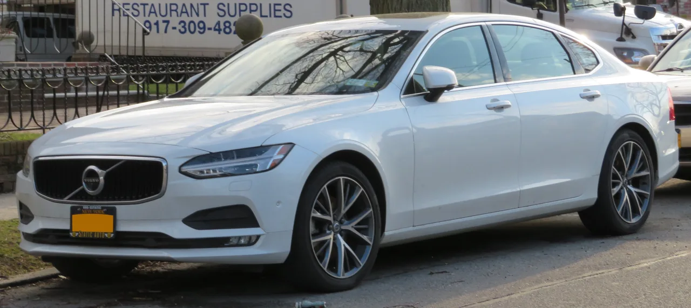
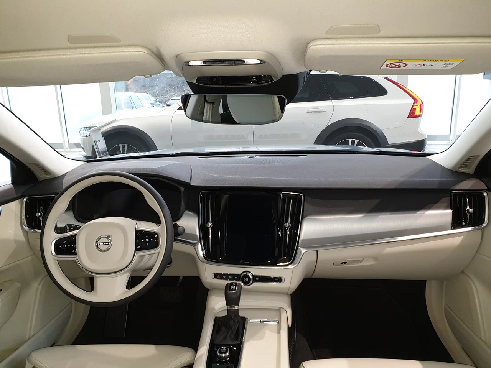
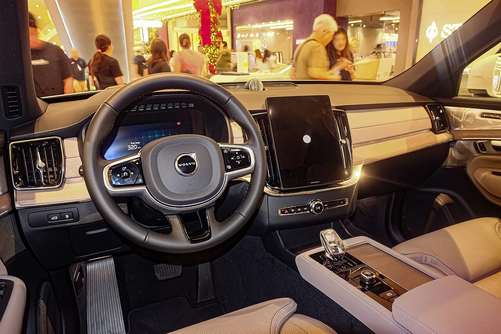

▲ 볼보 XC90. 7인승 SUV로, 드라마에서 인플루언서 부부의 차로 등장한다
볼보코리아가 쿠팡플레이 시리즈 '지금 불륜이 문제가 아닙니다'에 XC90과 S90을 지원합니다. 자동차 협찬 소식은 보도자료 한 장으로 끝나는 경우가 많지만, 이번 건은 차종이 배역에 붙은 방식이 꽤 정교합니다. 김혜수가 연기하는 인기 인플루언서 박경희 역에는 7인승 SUV인 XC90이, 조여정이 연기하는 피부과 원장 안수정 역에는 E세그먼트 세단 S90이 배치됐습니다. 이 짝짓기는 우연이 아닙니다.
1. 배역에 차를 붙이는 일은 캐스팅에 가깝다
드라마에서 차는 대사 없는 소품이지만, 인물의 계층과 취향을 몇 초 만에 설명하는 장치입니다. 시청자는 등장인물이 어떤 차에서 내리는지를 보고 그 사람의 소득 수준과 가족 구성, 성향을 짐작합니다. 협찬사 입장에서 중요한 것은 노출 시간이 아니라 그 차가 어떤 인물과 묶이느냐입니다.
이번 배분을 보면 그 원칙이 그대로 드러납니다. XC90은 7인승 SUV입니다. 아이가 있고 가족 단위 이동이 잦으며, 대외적으로 '좋은 가정'을 연출해야 하는 인플루언서 캐릭터와 직결됩니다. 반면 S90은 E세그먼트 세단입니다. 가족을 태우는 차가 아니라 개인의 지위를 드러내는 차이고, 전문직 개원의라는 설정과 어울립니다.
같은 브랜드의 두 차를 서로 다른 배역에 나눠 넣은 것도 의도적입니다. 하나의 작품 안에서 볼보라는 브랜드가 '가족용'과 '개인용' 두 가지 문맥을 동시에 확보하게 되기 때문입니다. 한 대만 협찬했다면 볼보는 둘 중 하나의 이미지만 가져갔을 것입니다.
| 배역 | 배우 | 차종 | 차량 성격 |
|---|---|---|---|
| 인플루언서 박경희 | 김혜수 | XC90 | 7인승 SUV, 가족·연출된 일상 |
| 피부과 원장 안수정 | 조여정 | S90 | E세그먼트 세단, 개인·전문직 |

▲ 볼보 S90. E세그먼트 세단으로, 전문직 캐릭터에 배정됐다
2. 볼보가 이런 작품을 고르는 이유
작품 자체도 눈여겨볼 대목입니다. '지금 불륜이 문제가 아닙니다'는 행복한 가정을 연출하는 인플루언서 부부와 이혼 소송 중인 의사 부부가 비밀로 얽히는 블랙 코미디입니다. 제작은 '오징어 게임'의 황동혁 감독 제작사가 맡았습니다.
안전과 가족 이미지를 오래 관리해온 브랜드가 불륜과 이혼을 소재로 한 블랙 코미디에 차를 넣는다는 것은, 표면적으로는 어울리지 않아 보입니다. 하지만 여기에는 시청 타깃이라는 실용적 이유가 있습니다. 이 작품의 주 시청층은 경제력을 갖춘 30~50대이고, 등장인물의 직업 구성 역시 볼보의 실제 구매층과 겹칩니다. 브랜드가 노리는 것은 작품의 도덕적 메시지가 아니라, 화면 앞에 앉아 있는 사람이 누구냐입니다.
또 하나는 플랫폼입니다. OTT 시리즈는 지상파 드라마와 달리 방영 후에도 계속 재생되고, 해외로도 유통됩니다. 한 번 삽입된 장면의 노출이 방영 기간에 끝나지 않는다는 뜻입니다.

▲ S90 실내. 차량 내부 대화 장면은 PPL에서 노출 시간이 가장 긴 구간이다
3. 한 작품이 아니라 여러 작품에 동시에
이번 협찬이 단발성이 아니라는 점도 중요합니다. 볼보는 tvN 토일드라마 '오싹한 연애'에도 S90을 지원하고 있습니다. 서로 다른 플랫폼(OTT와 케이블), 서로 다른 장르에 같은 모델을 동시에 넣는 방식입니다.
자동차 PPL에서 이런 병렬 집행은 노출량을 늘리는 것 이상의 효과를 노립니다. 같은 차가 여러 작품에서 다른 인물과 함께 등장하면, 특정 캐릭터의 이미지에 종속되지 않으면서 '요즘 저 차가 자주 보인다'는 인식이 만들어집니다. 광고에서 말하는 빈도 효과가 드라마라는 형식을 빌려 작동하는 셈입니다.
볼보는 이런 문화 콘텐츠 협업을 두고 "단순한 이동수단이 아닌 삶을 더 나은 방향으로 이끌 모빌리티"라는 가치를 알리는 방식이라고 설명합니다. 브랜드 언어를 걷어내고 보면, 수입차 시장에서 광고 예산을 어디에 쓰는 것이 효율적인지에 대한 판단이 담겨 있습니다.

▲ XC90 실내. 7인승 구성은 가족 서사를 가진 캐릭터와 맞물린다
4. PPL이 판매로 이어지는가 — 조건이 있다
그렇다면 드라마 협찬은 실제 판매에 도움이 될까요. 업계에서 대체로 동의하는 조건은 세 가지입니다.
첫째, 차가 이야기 안에서 기능해야 합니다. 주차장에 세워져만 있는 차보다, 인물이 그 안에서 대화하고 이동하는 장면이 있을 때 기억에 남습니다. 둘째, 인물의 호감도가 따라야 합니다. 부정적으로 소비되는 캐릭터의 차는 오히려 역효과가 납니다. 셋째, 모델이 현재 판매 중이어야 합니다. 화면에서 본 차를 검색했을 때 구매 가능한 상태여야 문의로 이어집니다.
이번 협찬은 세 조건을 모두 충족합니다. XC90과 S90 모두 현재 국내에서 판매 중인 모델이고, 두 배역 모두 극의 중심에 있습니다. 다만 PPL의 효과는 즉각적인 계약 증가보다 브랜드 고려군에 진입시키는 단계에서 작동하는 경우가 많습니다. 실제 구매 결정은 가격과 보증, 시승 이후에 이뤄집니다.
정리하면, 이번 소식은 연예 가십처럼 소비되기 쉽지만 실제로는 수입차 브랜드가 한국 시장에서 인지도를 관리하는 방식을 보여주는 사례입니다. 어떤 배우가 어떤 차를 타는지는, 대본이 아니라 마케팅 회의에서 결정됩니다.